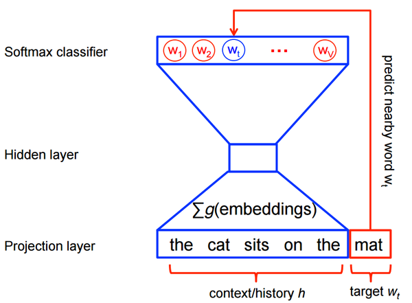

transfer learning 10 Exciting Ideas of 2018 in NLP This post gathers 10 ideas that I found exciting and impactful this year—and that we'll likely see more of in the future. For each idea, it highlights 1-2 papers that execute them well.
events EMNLP 2018 Highlights: Inductive bias, cross-lingual learning, and more This post discusses highlights of EMNLP 2018. It focuses on talks and papers dealing with inductive bias, cross-lingual learning, word embeddings, latent variable models, language models, and datasets.
language models A Review of the Neural History of Natural Language Processing This post expands on the Frontiers of Natural Language Processing session organized at the Deep Learning Indaba 2018. It discusses major recent advances in NLP focusing on neural network-based methods.
natural language processing NLP's ImageNet moment has arrived Big changes are underway in the world of NLP. The long reign of word vectors as NLP's core representation technique has seen an exciting new line of challengers emerge. These approaches demonstrated that pretrained language models can achieve state-of-the-art results and herald a watershed moment.
 word embeddings On word embeddings - Part 2: Approximating the Softmax The softmax layer is a core part of many current neural network architectures. When the number of output classes is very large, such as in the case of language modelling, computing the softmax becomes very expensive. This post explores approximations to make the computation more efficient.
word embeddings On word embeddings - Part 1 Word embeddings popularized by word2vec are pervasive in current NLP applications. The history of word embeddings, however, goes back a lot further. This post explores the history of word embeddings in the context of language modelling.